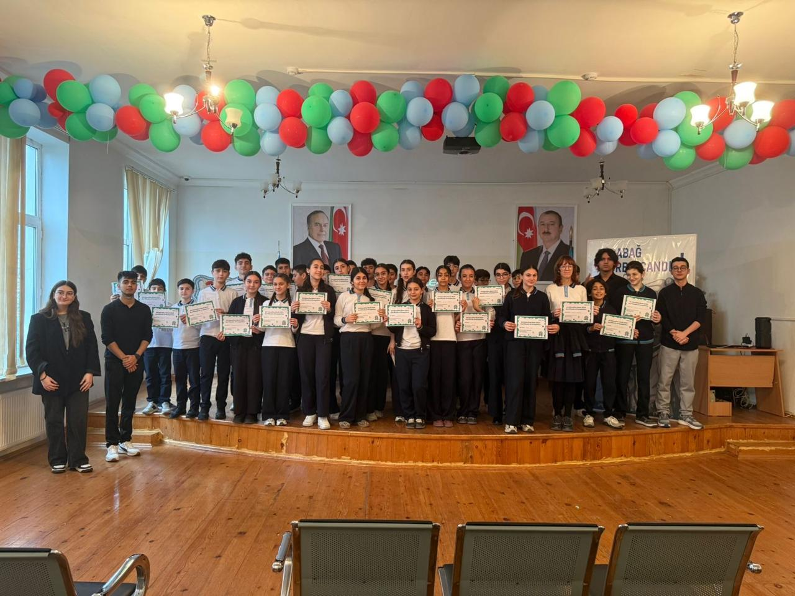

My Projects
Project 1 – Constructing Logic Gates
Through this project, I learned how to construct basic logic gates using electronic components.
Project 2 – Hour of Code
For This project, we went to school and tought students bug arena. The project helped us improve our communication and teaching skills.
